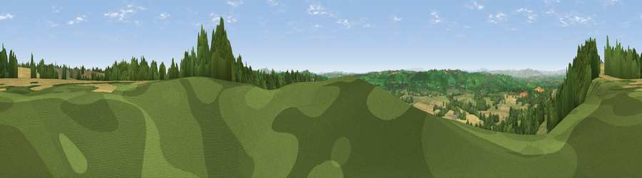

Viewpoint near Upper Sapey
#10005 in England · top 24% of its area beats it · near Upper SapeyThe view, rendered

A 360° render of this exact spot computed from the terrain model, tree cover and land cover — summer colours, afternoon light, calibrated against photographs of famous viewpoints. Real trees, hedges and buildings will differ in detail.
The panorama
Grey silhouette: terrain skyline in each direction (720 bearings, Earth curvature and refraction included). Dashed green: skyline with trees (+15 m) and buildings (+8 m) as obstacles. Blue strip: how far the ground is visible on each bearing.
Where the view opens
Wedge length = distance to the farthest visible ground on that bearing (vegetation-aware). Rings at 10, 25 and 50 km.
What fills the view
52% grassland · 30% woodland · 17% cropland ·
Angular shares of the visible panorama (visual magnitude), not map area. Landscape diversity 0.45 (0–1 Shannon).
Key numbers
More beautiful places nearby
The staircase of upgrades: each row has a higher view potential than everything closer. Driving times are estimates from straight-line distance, calibrated against real road routing — check an actual route before setting out.
| Place | Direction | Drive | Score |
|---|---|---|---|
| Viewpoint near Upper Sapey | NNW · 1 km | ~2 min | 69.8 |
| Viewpoint near Upper Rochford | N · 3 km | ~6 min | 71.0 |
| Viewpoint near Bromyard | S · 8 km | ~17 min | 72.9 |
| Walsgrove Hill | ENE · 9 km | ~17 min | 79.6 |
| Woodbury Hill | E · 9 km | ~17 min | 81.6 |
| Viewpoint near Great Witley | E · 9 km | ~18 min | 83.4 |
| Titterstone Clee | NNW · 16 km | ~28 min | 83.8 |
| North Hill | SSE · 20 km | ~34 min | 86.8 |
52.26770, -2.49855 · source: screening · position refined by local search. Computed location — check access rights before visiting.